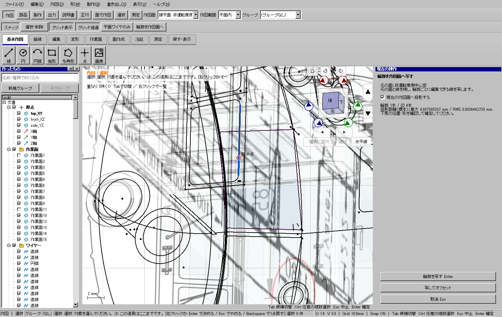
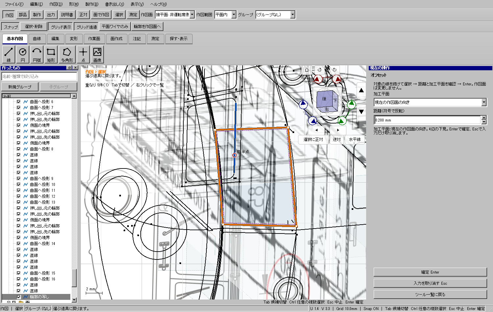
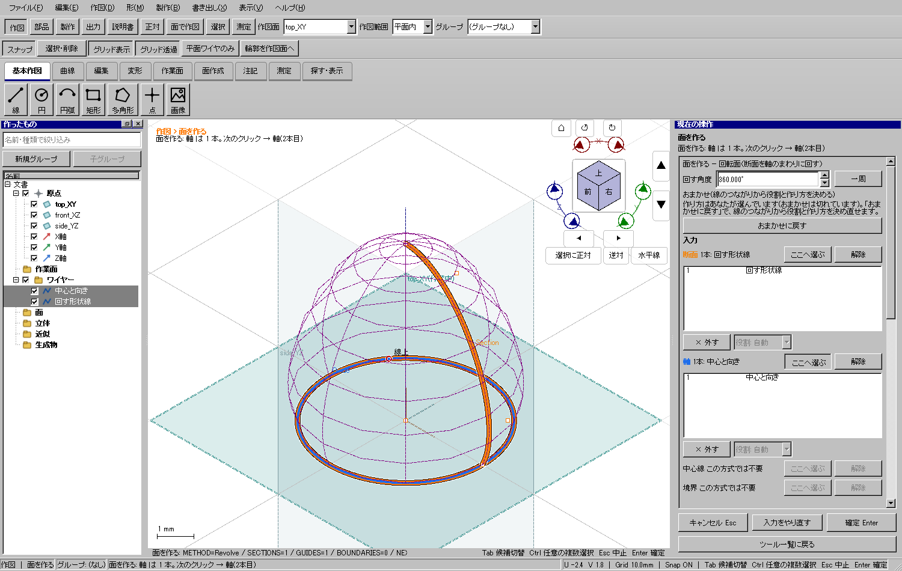

2026-11-18。WP-08の私有UIと入力接続に限定。元の面・部品・ワイヤー・UUIDと表示を保全する。幾何核、保存形式、公開コアAPIは変更しない。
共有されたER1.kcd2の対象面は、四隅の最小二乗平面から最大0.0033412 mm、RMS 0.0032680 mmずれている。見た目だけで平面扱いしたり元形状を黙って修正したりせず、明示した輪郭の写しを作る。
内側の各閉輪郭も1本ずつ写す。投影を外した場合は元の3D位置に写す。未対応の投影は確定を無効にし、途中まで変換できた輪郭だけを黙って作らない。


手描き図の円を軸の中心と向きの指定に使い、上側の形状線を断面に指定する。「回す角度」は上部に表示し、「一周」で360°にできる。円・円弧の入力は私有UIで既存の直線軸リクエストへ適合させ、補助の軸ワイヤーを文書へ追加しない。直線軸、複数断面の既存経路も維持する。

関連36件のWindows/画面なしUI試験に成功。新規機能は共有モデルを含め9件ずつ再確認し、原本のSHA-256が一致する。具体的な試験にはねじれた四辺面、複数の穴、投影しない写し、取消と作図再開、未対応投影の部分確定拒否、円・円弧・傾いた軸・丸い先端、Undo/Redoと保存再読込を含む。入力はQtの表示ウィジェットとイベント経路を使う。OS上の手動操作だけによる検査とは呼ばない。
初回は「写してオフセット」が既定距離で即確定する経路と、棚を移動した後に回転角の欄を見つけられず非表示になる問題を検出。オフセットの下見を明示して開き、移動する入力欄を安全な参照で保持するよう修正した。未対応投影で一部の輪郭だけを確定しないことも検証した。失敗ログは out/face-outline-20261118 に保全する。
初回の全体検証では配布UI1,065件が成功した一方、開発UIの「PROJ direct tree inputs and lifecycle」が不合格になった。旧試験は一覧選択の即時ヘルパーに加えてitemClickedを手動通知し、同じ対象を二度入力する経路を作っていた。単独ではWindows/画面なしの両方で成功したため、時間だけを延ばしたり成功へ読み替えたりせず、試験を表示中の行へのマウス入力1回に置き換え、遅延入力の後も対象が保持されることを検査する。製品の投影処理は変更しない。旧試験のログを保全し、新しい実行IDで全体を再検証する。
全体・配布版検証と公開の結果は完了時に追記する。重点試験のみを完成配布版と表示しない。